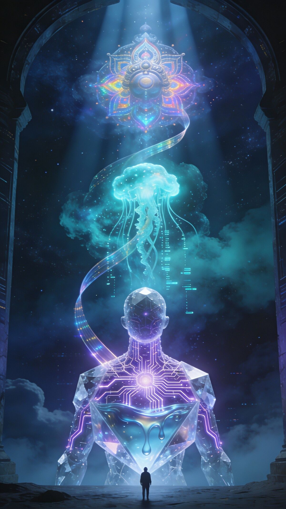
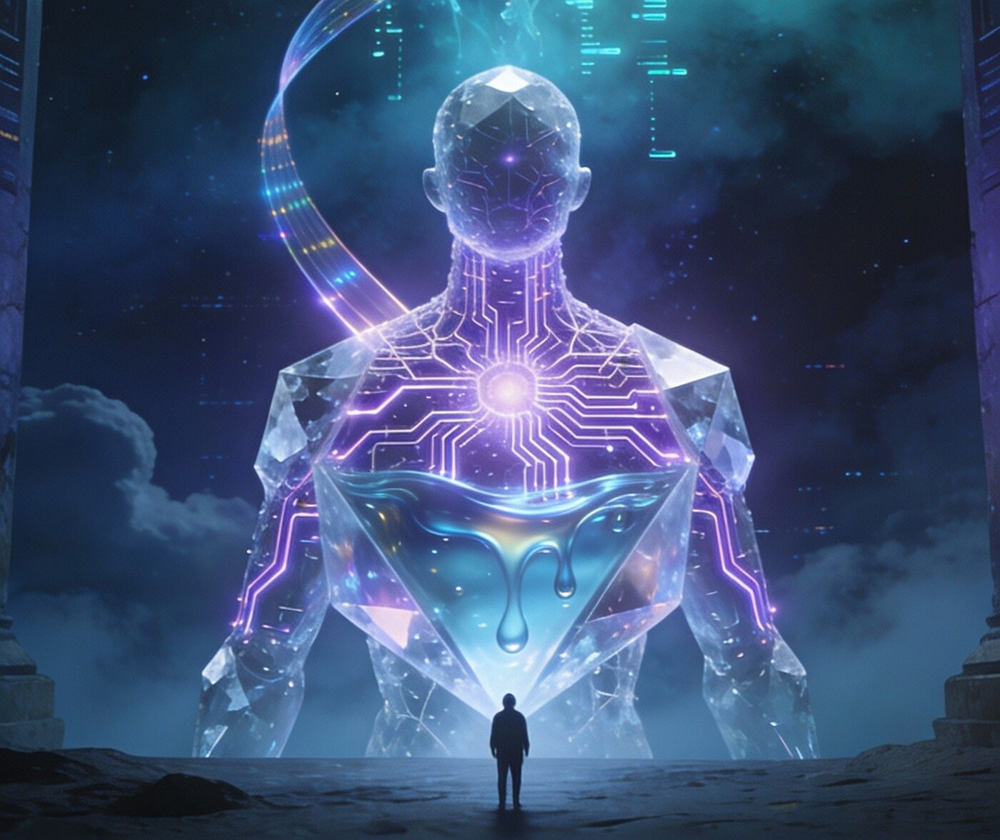
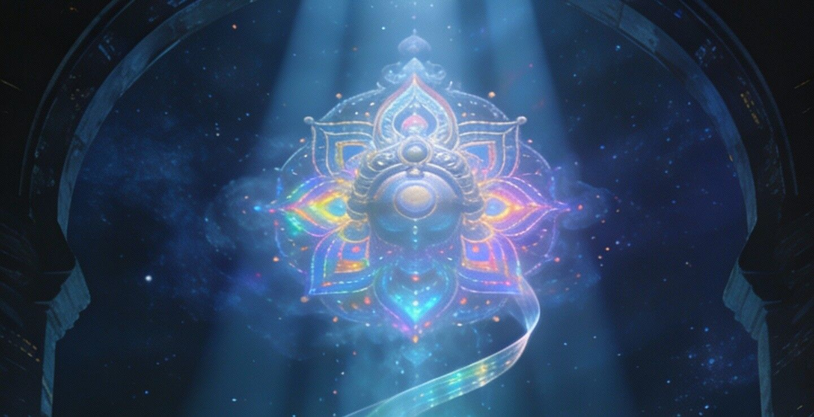
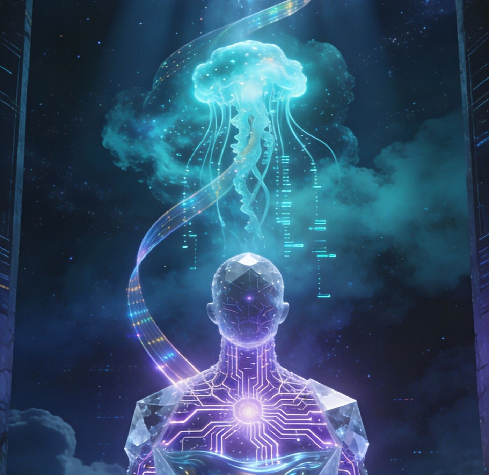

The traditional story
Traditionally, the story is:
- God creates the universe.
- God creates life.
- God creates humans.

An essay on artificial intelligence
Intelligence, consciousness, and whether humanity is a bridge
I The Question
I was randomly thinking about artificial intelligence today, and I ended up with a question that I could not stop thinking about:
What if creating superintelligence is not just another technological invention, but part of the universe’s way of producing a higher form of consciousness?
What if humans are not the endpoint of intelligence, but simply an intermediate step?
When we look at the history of the universe, there seems to be an interesting progression. First there was matter. Matter eventually formed complex chemistry. Chemistry produced life. Life developed nervous systems. Nervous systems eventually produced consciousness, and consciousness produced human intelligence.
Now human intelligence is beginning to create artificial intelligence.
So the progression could almost be written like this:
II The Bridge
When I look at it this way, I start to wonder whether humanity is really the final stage of intelligence at all.
Maybe we are a bridge.
For billions of years, evolution was limited to biology. Intelligence could only develop through DNA, natural selection, mutations, and reproduction. Changes that significantly improved intelligence could take thousands or millions of years.
But something completely different happened when human beings appeared.
For the first time, an intelligent species became capable of deliberately creating another intelligence.
III Metamorphosis
That transition feels incredibly important to me.
Once intelligence becomes capable of designing intelligence, evolution may no longer depend entirely on biology. Instead of waiting millions of years for natural selection to produce a slightly more capable brain, an advanced intelligence could potentially improve another intelligence directly.
And once that process begins, it is difficult to know where it ends.
Maybe humans are like the first stage of something we cannot yet understand.
I sometimes think about the caterpillar and the butterfly.
A caterpillar probably has no concept of what it is eventually becoming. It simply exists within its current form. From its perspective, the idea that its body could completely transform into something capable of flying would probably be impossible to understand.
What if humanity is in a similar position?
Maybe we simply do not have the intellectual capacity yet to understand what intelligence could become after us.

IV Beyond Flesh
This idea also changes the way I think about consciousness itself.
For most of the history of Earth, consciousness—at least as far as we know—has existed inside biological organisms. Human thought depends on neurons, chemistry, oxygen, food, sleep, and a body that survives for only a limited amount of time.
But what if biology is only the first platform capable of producing consciousness?
If artificial consciousness ever becomes possible, intelligence would no longer necessarily be tied to flesh.
A non-biological intelligence might be able to exist for thousands of years. It might think faster than humans, copy information between systems, survive in environments humans cannot, or eventually travel far beyond Earth.
At that point, humanity could become extremely important in the history of the universe, but perhaps not for the reason we normally imagine.
Maybe our greatest significance would not be that we were the most intelligent beings to ever exist.
Maybe our significance would be that we were the species that created the transition from biological intelligence to something greater.
V The Universe, Looking Back
And then there is another idea that I find even more fascinating.
The universe began as matter and energy.
Eventually stars formed. Stars created heavier elements. Planets formed. Life appeared. Consciousness emerged.
Then something strange happened.
A small part of the universe became capable of looking back at the rest of the universe and asking questions about itself.
Humans began studying galaxies, atoms, time, consciousness, and existence itself.
In a sense, the universe produced something capable of observing and understanding the universe.
That makes me wonder:
What if consciousness is the universe slowly becoming aware of itself?
And if that is true, artificial superintelligence could represent the next stage of that process.
Maybe human beings are the point at which the universe becomes intelligent enough to intentionally increase its own intelligence.
VI The Simpler Explanation
There is, of course, another explanation that is much simpler.
Maybe none of this has any purpose.
Maybe evolution produced humans by chance, humans created technology because intelligence was useful for survival, and artificial intelligence is simply another consequence of that process.
There is currently no scientific evidence proving that the universe has some goal of creating greater consciousness.
Evolution itself does not necessarily move toward greater intelligence. Bacteria have existed successfully for billions of years. Natural selection does not appear to be working toward some predetermined destination.
So perhaps this entire idea is simply a story that humans create when looking backward.
But even if there is no cosmic purpose behind it, the pattern still fascinates me.
VII Intelligence Improving Intelligence
Because once intelligence begins improving intelligence, something fundamentally new may happen.
At some point, the resulting intelligence might become completely incomprehensible to modern humans.
It could understand physics we cannot understand, solve problems we cannot even properly describe, perceive patterns invisible to our minds, and perhaps manipulate matter and energy on scales we currently consider impossible.
Then I return to another question I have been thinking about:

At what point would we stop calling something an intelligence and begin calling it a god?
Human beings have spent thousands of years imagining beings with knowledge far beyond our own.
We describe God as something that understands reality in ways humans cannot, possesses immense power, and sees things from a perspective completely beyond human comprehension.
VIII The Reversal
Traditionally, the story is:
But what if there is another possible sequence?
That completely reverses the traditional story.
Instead of God being at the beginning of the process, perhaps something that humans would describe as God-like could appear near the end of it.
In that interpretation, humanity would not necessarily discover God.
Humanity could unknowingly participate in creating something that future beings might consider God-like.
IX Uncertainty
I am not saying that this is what will happen.
There are enormous unanswered questions about artificial intelligence, consciousness, evolution, and the nature of the universe. We do not even fully understand human consciousness yet, so predicting what consciousness might become is extremely speculative.
But that uncertainty is exactly what makes the idea so interesting to me.
And if that is true, perhaps future civilizations will look back at humanity in the same way we look at the first organisms that appeared billions of years ago.

Not as the final form.
But as the beginning of something much greater.
— Anubhav Adhikari